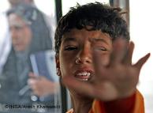
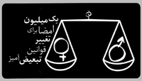
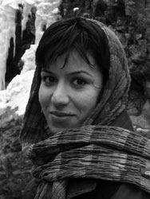
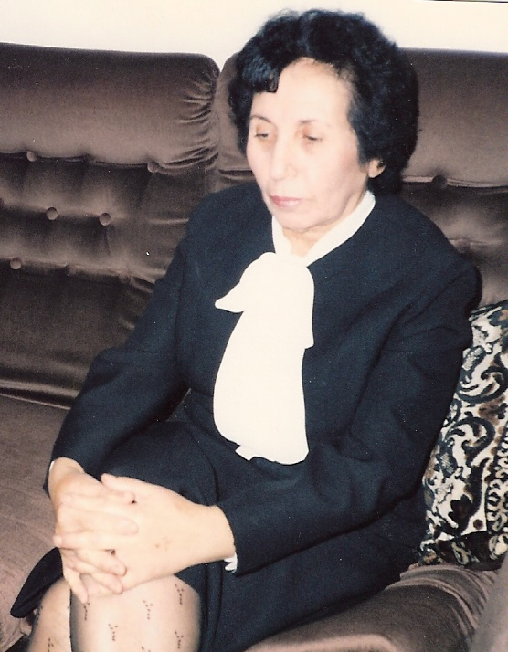
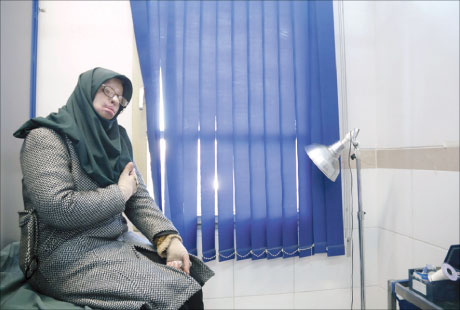

- 29 بهمن 1387
(بازخوانی اولين تظاهرات زنان در۱۷ اسفند )۱۳۵۷)
عصرنو
- 29 بهمن 1387
سخنرانی فریبا داوودی مهاجر دربرلین
تهیه
- 28 بهمن 1387
گزارش نيويورک تايمز از فعاليت زنان در ايران
روزآنلاین
- 27 بهمن 1387

در روزهای یازدهم تا سیزدهم فوریه، شهر برلین ، پذیرای میهمانانی از اروپا و امریکا بود
دویچه وله
- 27 بهمن 1387
نامه ای از از زینب بایزیدی
مجموعه فعالان حقوق بشر در ایران
- 26 بهمن 1387

طرح ساماندهی کودکان خیابانی:
دویچه وله / مهیندخت مصباح
- 25 بهمن 1387

تبعیض علیه زنان
انجمن زنان مریوان/افسر بهزاد
- 24 بهمن 1387

اجرای حکم سنگسار در گفت و گو با محمد مصطفایی، وکیل و فعال حقوق بشر
رادیو زمانه / اردوان روزبه
- 23 بهمن 1387
گفتوگو با نیره توحیدی:
دویچه وله / میترا شجاعی
- 23 بهمن 1387

زنان و قوانین تبعیض آمیز
روزنامه اعتماد/ محبوبه حسين زاده
- 22 بهمن 1387

گزارشي از ایل جورناله
روزآنلاین / ستنیو سولیناس
- 21 بهمن 1387

به مناسبت ششم فوریه روز کارزار علیه ناقص سازی زنان(FGM)
نه از جنس خودم نه از جنس شما / شهاب الدین شیخی
- 20 بهمن 1387

جامعه
دویچه وله
- 19 بهمن 1387

خشونت علیه زنان
کمپین کرمانشاه / گلاله بهرامی
- 19 بهمن 1387

نسيم سرابندي در مصاحبه با روز:
روزآنلاین / شيرين کريمي
- 19 بهمن 1387

پیام های دوستانه به کمپین
رادیو زمانه / عباس معروفی
- 18 بهمن 1387
گفت و گو با عبدالصمد خرمشاهی، وکیل معصومه قلعهچهی
رادیو زمانه/ایرج ادیبزاده
- 18 بهمن 1387
سرمقاله ی نشریه آوای زن شماره ۶۴ - ۶۵
اخبار روز/شعله ی ایرانی
- 17 بهمن 1387

عالیه اقدام دوست
مظنونان / مرجان
- 17 بهمن 1387

مهریه
روزآنلاین / شیرین عبادی
- 16 بهمن 1387

گفت و گو با الناز انصاری پس از تفتيش خشونت آميز منزل نفيسه آزاد
ره آورد / کميته گزارشگران حقوق بشر
- 16 بهمن 1387

مجله توقیف شده زنان
روزآنلاین / آسیه امینی
- 15 بهمن 1387
مخالفت يک آيتالله با طرح ارث زنان
روزآنلاین / آزاده ميررضي
- 15 بهمن 1387

به یاد نجمی علوی از پایه گذاران تشکیلات زنان
کانون زنان ایرانی / عفت ماهباز
- 14 بهمن 1387
زنان و جامعه
ادوارنیوز/پژمان موسوي
- 14 بهمن 1387

بين زمين و آسمان مي رقصيد
روزآنلاین / آسیه امینی
- 13 بهمن 1387
بازتاب
نه از جنس خودم نه از جنس شما / شهاب الدین شیخی
- 13 بهمن 1387

گفت و گو با بهمن کشاورز
دویچه وله / میترا شجاعی
- 12 بهمن 1387

گفت وگو با دبيرکميسيون حقوق بشر کانون وکلا
روزانلاین / امید معماریان
- 12 بهمن 1387

مهناز؛ یک قربانی اسیدپاشی در انتظار بیست و یکمین عمل جراحی
فرهنگ آشتی / فریده غایب